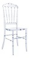
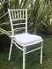

|  |
Silla Royal |
Modelo muy utilizado en el mundo de los eventos.
Sillas ROYAL ORIGINAL en POLICARBONATO desarrolladas en nuestro país con los estándares más altos de calidad. |
$320 |
 |
Silla Reforzada |
Silla Plástica de diseño tradicional. Es cómoda, estable y ergonómica para mayor comodidad. Elaborada con materiales resistentes de alta calidad. Puede acoplarse fácilmente y su practicidad hace que la puedas transportar facilmente a diferentes eventos o reuniones. Ideal para espacios exteriores y semi-exteriores ya que cuenta con filtro UV que la hace super resistente a daños ocasionados por la exposicion al sol. |
$180 |
|  |
Silla Tiffany |
Modelo Actualmente mas utilizado en el mundo de los eventos.
Sillas tiffany en resina desarrolladas en nuestro país con los estándares más altos de calidad. |
$320 |
 |
Silla Country |
Silla Plegable de madera , laqueada ! color BLANCO, TERMINACION LAQUEADO, Para exterior e interior, Esta hecha en madera de pino de primera calidad y plegada ocupa solo 5cm de espesor. |
$250 |